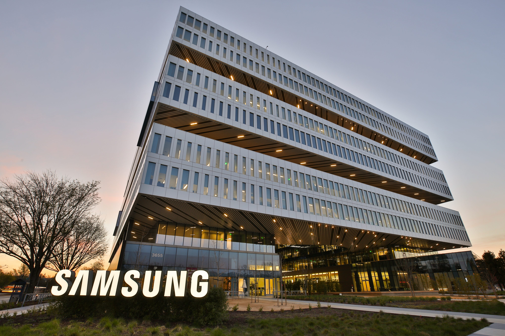
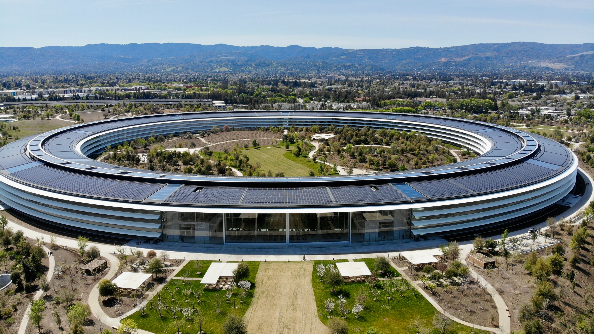

The San Francisco Bay Area has the largest concentration of high-tech companies
in the United States, at 387,000 high-tech jobs, of which Silicon Valley accounts for 225,300 high-tech jobs.
Silicon Valley has the highest concentration of high-tech workers of any metropolitan area,
with 285.9 out of every 1,000 private-sector workers.Silicon Valley has the highest average high-tech salary
in the United States at $144,800.Largely a result of the high technology sector, the San Jose-Sunnyvale-Santa Clara,
CA Metropolitan Statistical Area has the most millionaires and the most billionaires in the United States per capita.
The region is the biggest high-tech manufacturing center in the United States.
The unemployment rate of the region was 9.4% in January 2009 and has decreased
to a record low of 2.7% as of August 2019 Silicon Valley received 41% of all U.S. venture investment in 2011,
and 46% in 2012 More traditional industries also recognize the potential of high-tech development,
and several car manufacturers have opened offices in Silicon Valley to capitalize on its entrepreneurial ecosystem.
Manufacture of transistors is, or was, the core industry in Silicon Valley.
The production workforce was for the most part composed of Asian and Latino immigrants who were paid low wages
and worked in hazardous conditions due to the chemicals used
in the manufacture of integrated circuits. Technical, engineering, design,
and administrative staffs were in large part well compensated.

Samsung in San Jose

Apple Park in Cupertino